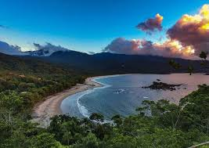
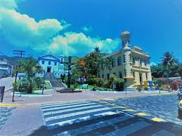

Capital da Vela
Um refúgio de sofisticação e natureza selvagem. Onde a Mata Atlântica encontra o oceano em sua forma mais pura. Descubra o lado exclusivo do litoral norte.

Destinos Exclusivos
Com mais de 40 praias e 300 cachoeiras, selecionamos as experiências que definem o verdadeiro espírito da ilha.

